WS21 — Apne Aap Par Vishwas Kaise Karein?
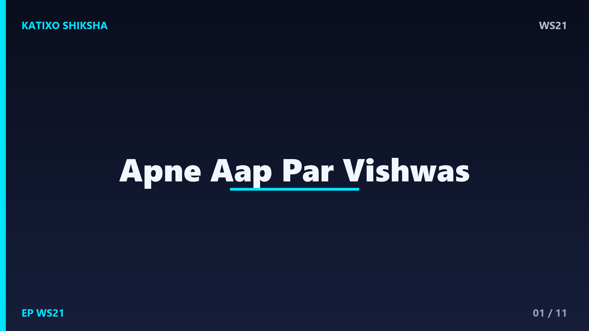
Slide 1दोस्तों, एक सवाल — क्या तुमने कभी कोई सपना सिर्फ़ इसलिए छोड़ दिया क्योंकि अंदर से एक आवाज़ आई — मुझसे नहीं होगा? वो आवाज़, वो डर, हम सबके अंदर है। ये है Katixo KhojLab, और आज की कहानी है उस सबसे बड़ी ताक़त के बारे में जो किसी किताब या किसी और के पास नहीं, तुम्हारे ही अंदर छुपी है — खुद पर विश्वास। चलो एक कहानी से सीखते हैं कि अपने आप पर भरोसा कैसे करें।
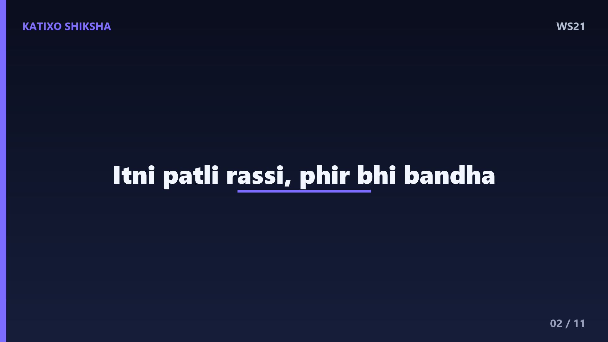
Slide 2एक बार एक छोटे से सर्कस में एक विशाल हाथी था। लोग हैरान थे कि इतना ताक़तवर हाथी सिर्फ़ एक पतली सी रस्सी और छोटी सी खूँटी से बँधा रहता है, जबकि वो चाहे तो उसे एक झटके में तोड़ सकता है। एक आदमी ने मालिक से पूछा — ये भागता क्यों नहीं? मालिक मुस्कुराया और बोला — जब ये हाथी छोटा था, तब इसी रस्सी से बाँधा गया था। तब ये कमज़ोर था, बहुत कोशिश की पर तोड़ नहीं पाया।
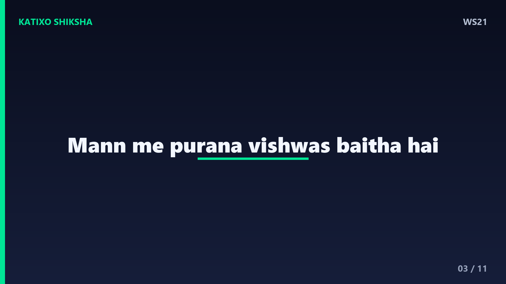
Slide 3मालिक ने आगे कहा — धीरे-धीरे इस हाथी ने मान लिया कि ये रस्सी कभी नहीं टूटेगी। अब ये बड़ा और ताक़तवर हो गया है, पर इसके मन में वही पुराना विश्वास बैठा है — मुझसे नहीं होगा। इसलिए ये कोशिश ही नहीं करता। दोस्तों, हम भी अक्सर इस हाथी जैसे होते हैं। बचपन की कुछ नाकामियाँ हमारे मन में एक रस्सी बाँध देती हैं, और हम भूल जाते हैं कि अब हम कितने ताक़तवर हो चुके हैं।
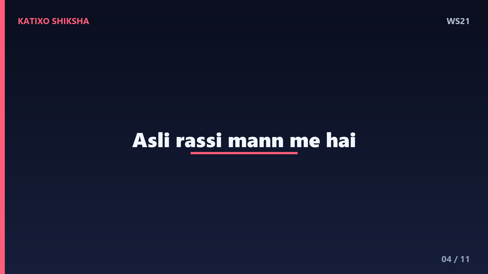
Slide 4Lesson नंबर एक — तुम्हें रोकने वाली सबसे बड़ी रस्सी बाहर नहीं, तुम्हारे अपने मन में है। ये limiting beliefs हैं — वो झूठी बातें जो हमने खुद के बारे में मान ली हैं। मैं अच्छा नहीं हूँ, मुझसे नहीं होगा, मैं काफ़ी नहीं हूँ। पर ये सच नहीं, सिर्फ़ एक पुरानी कहानी है जो तुमने खुद को सुनाई है। और अच्छी खबर ये है — जो कहानी तुमने बनाई है, वो तुम बदल भी सकते हो।
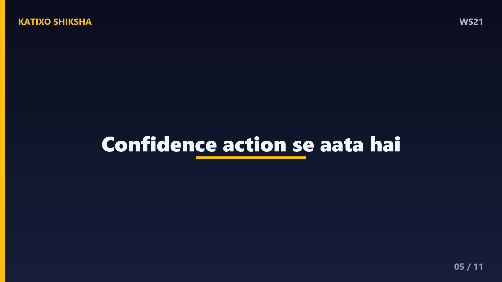
Slide 5Lesson नंबर दो — आत्मविश्वास पहले नहीं आता, action से आता है। ज़्यादातर लोग सोचते हैं कि पहले confidence आएगा, फिर मैं करूँगा। पर सच इसका उल्टा है — पहले तुम छोटा सा कदम उठाते हो, फिर वो छोटी सी जीत तुम्हें confidence देती है। हर बार जब तुम डर के बावजूद कुछ करते हो, तुम्हारा खुद पर भरोसा थोड़ा और मज़बूत होता है। Confidence एक मसल है — जितना इस्तेमाल करोगे, उतना बढ़ेगा।
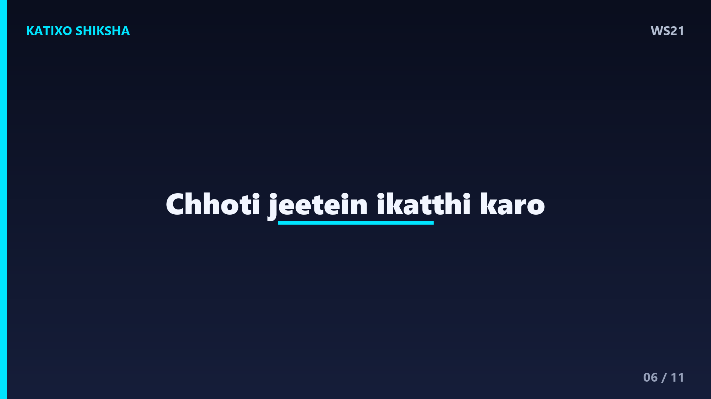
Slide 6अब एक practical technique — छोटी-छोटी जीतें इकट्ठा करो. एक बड़ा लक्ष्य डराता है, इसलिए उसे छोटे टुकड़ों में बाँट दो। अगर पूरी किताब डराती है, तो आज सिर्फ़ एक पेज पढ़ो। हर छोटी जीत को मनाओ, खुद की पीठ थपथपाओ। ये जीतें एक के ऊपर एक जमा होकर एक मज़बूत नींव बनाती हैं। दिमाग को सबूत चाहिए कि तुम कर सकते हो — और हर छोटी जीत वही सबूत देती है।
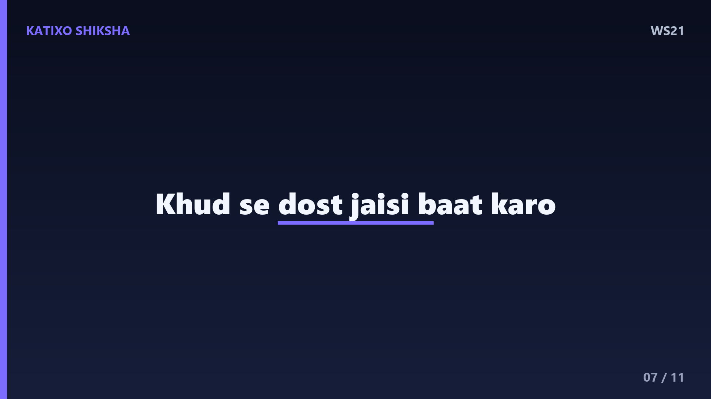
Slide 7Technique नंबर दो — अपनी self-talk बदलो. दिनभर तुम खुद से जो बातें करते हो, वही तुम्हारी असली पहचान बनती है। जब तुम गलती करो, तो खुद को कोसने के बजाय वैसे बात करो जैसे तुम अपने सबसे अच्छे दोस्त से करते। मैं नहीं कर सकता की जगह कहो — मैं सीख रहा हूँ, मैं कोशिश कर रहा हूँ। शब्द बदलोगे, तो सोच बदलेगी, और सोच बदलेगी तो ज़िंदगी बदलेगी।
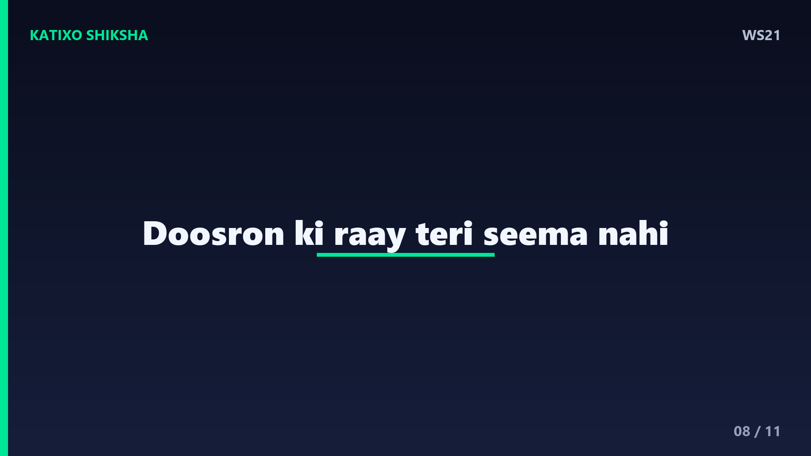
Slide 8एक ज़रूरी बात — दूसरों की राय को अपनी सीमा मत बनने दो। लोग अक्सर अपने डर तुम पर थोप देते हैं — तुमसे नहीं होगा, ये तुम्हारे बस का नहीं। पर याद रखो, जो लोग खुद सपना देखने से डरते हैं, वही दूसरों को रोकते हैं। तुम्हारी क्षमता का फ़ैसला कोई और नहीं कर सकता। दुनिया की हर बड़ी खोज किसी ऐसे इंसान ने की जिसे लोगों ने कहा था ये नामुमकिन है।
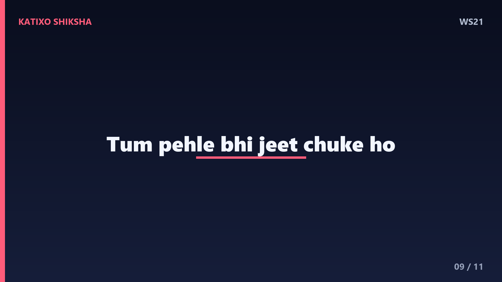
Slide 9दोस्तों, एक और ताक़तवर तरीका है — अपनी पुरानी जीतों को याद करो। सोचो, ज़िंदगी में कितनी बार तुमने सोचा था ये मुश्किल है, और फिर भी तुमने कर दिखाया। चलना सीखना, साइकिल चलाना, कोई exam पास करना — हर बार तुमने डर को हराया है। तुम पहले भी मज़बूत रहे हो, और अब भी हो। जब अगली बार डर आए, तो उस पुराने ख़ुद को याद करो जिसने कभी हार नहीं मानी।
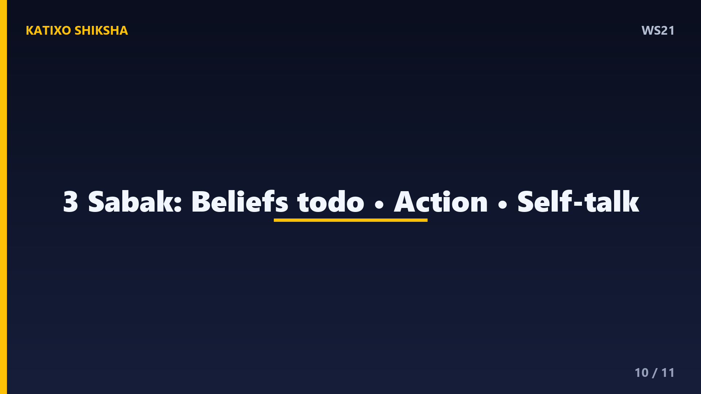
Slide 10चलो आज की तीन सबसे बड़ी सीख याद कर लें। पहली — तुम्हें रोकने वाली रस्सी तुम्हारे मन में है, वो limiting beliefs सच नहीं हैं। दूसरी — confidence action से आता है, छोटी-छोटी जीतें इकट्ठा करो। और तीसरी — अपनी self-talk बदलो और दूसरों की राय को अपनी सीमा मत बनाओ। ये तीन चीज़ें उस अंदर वाली रस्सी को हमेशा के लिए तोड़ देंगी।
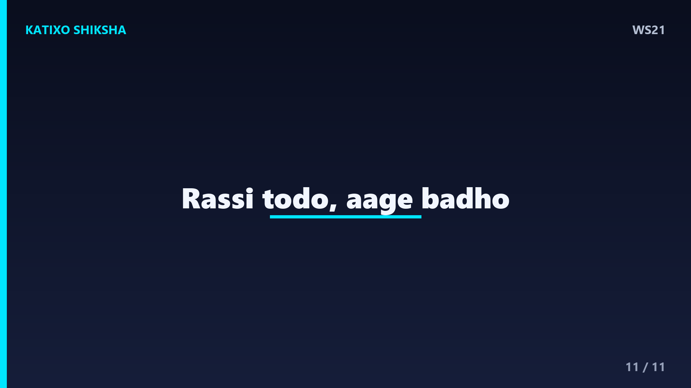
Slide 11दोस्तों, याद रखना — तुम उस सर्कस के हाथी से कहीं ज़्यादा ताक़तवर हो। जो रस्सी तुम्हें बाँधे हुए है, वो असली नहीं, सिर्फ़ एक पुरानी सोच है। आज एक छोटा सा कदम उठाओ, उस डर के बावजूद, और देखो रस्सी कैसे टूट जाती है। दुनिया तुम पर तब विश्वास करेगी जब तुम खुद पर विश्वास करोगे। तुममें वो सब है जो तुम्हें चाहिए। Like, share, aur Katixo KhojLab ko subscribe karna mat bhoolna. Milte hain agli kahani mein!